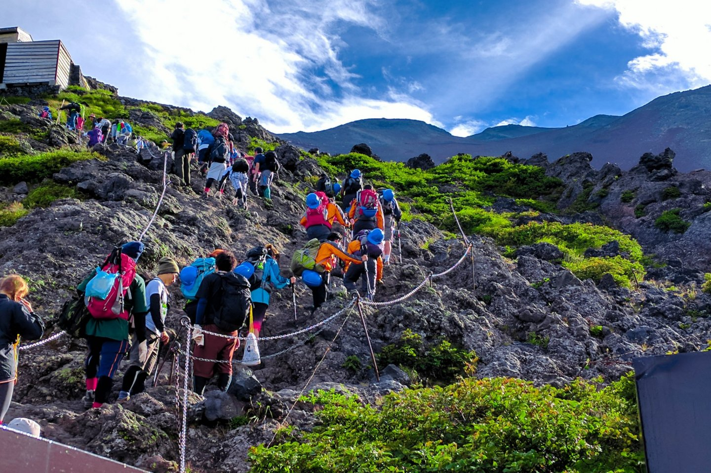

Without a doubt Japan's most recognizable landmark, majestic Mount Fuji (Fuji-san) is also the country's highest mountain peak. Towering 3,776 meters over an otherwise largely flat landscape to the south and east, this majestic and fabled mountain is tall enough to be seen from Tokyo, more than 100 kilometers away.

Without a doubt Japan's most recognizable landmark, majestic Mount Fuji
(Fuji-san) is also the country's highest mountain peak. Towering 3,776
meters over an otherwise largely flat landscape to the south and east,
this majestic and fabled mountain is tall enough to be seen from Tokyo,
more than 100 kilometers away. Mount Fuji has for centuries been
celebrated in art and literature and is now considered so important an
icon that UNESCO recognized its world cultural significance in 2013.
Part of the Fuji-Hakone-Izu National Park, Mount Fuji is climbed by
more than a million people each summer as an act of pilgrimage, which
culminates in watching the sunrise from its summit. While some still
choose to begin their climb from the base, the majority of climbers now
start from above the halfway mark, at the 5th Station, resulting in a more
manageable six-or-so-hour ascent.
Those who do attempt the complete climb are advised to depart in the
afternoon, breaking up the climb with an overnight stop at one of the
"Mountain Huts" designed for this very purpose. An early start the next
day gets you to the top for the sunrise. Of course, for many, simply
viewing the mountain from the distance, or from the comfort of a speeding
train, is enough to say "been there, done that."
2022 @ Project 1 by Christopher Altamirano